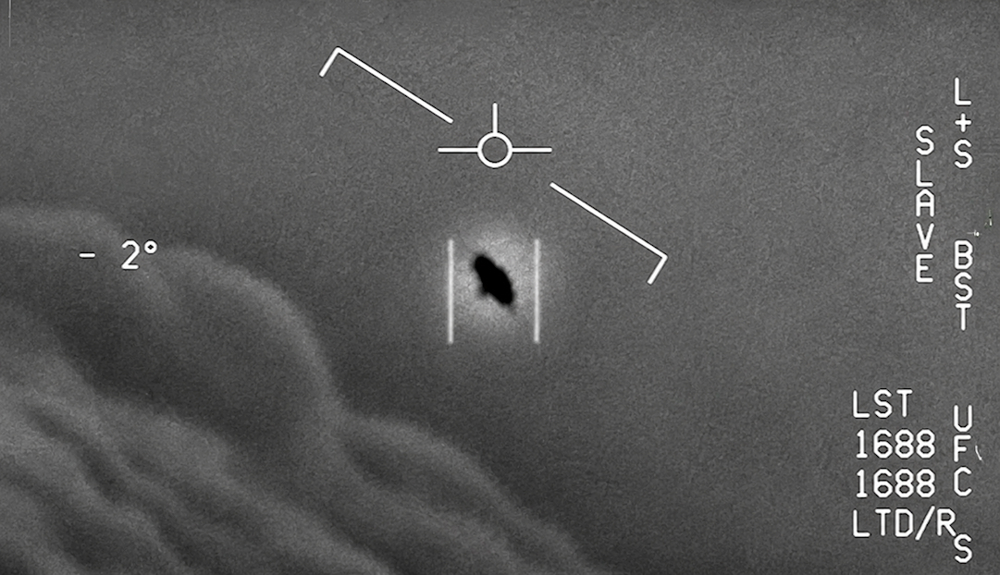
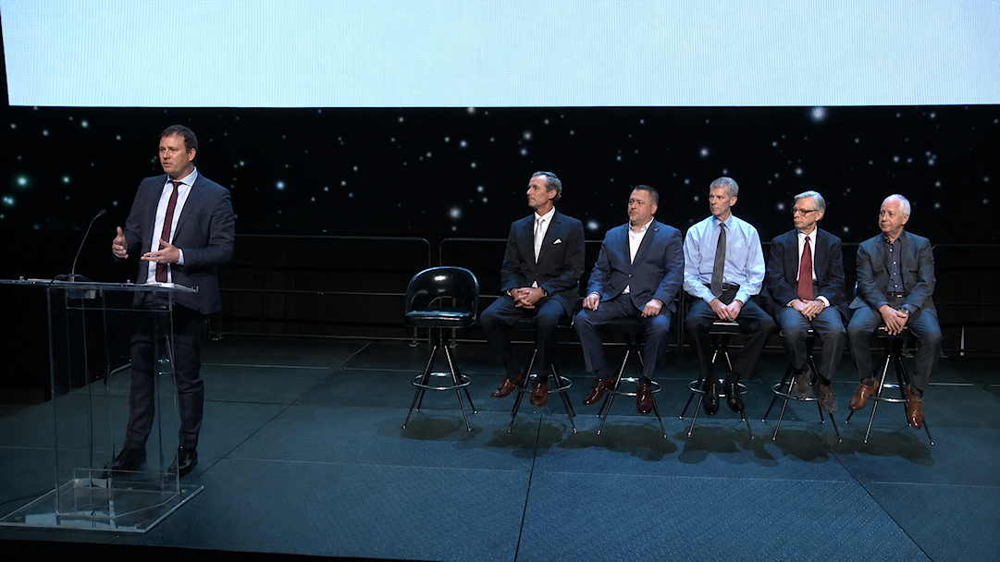

En paralelo al cine de ficción, existe un ecosistema completamente distinto que también moldea expectativas: el documental de investigación OVNI. Desde los pioneros años noventa hasta las producciones multi-millonarias de Netflix, este género ha evolucionado de la conspiranoia marginal a los testimonios ante el Congreso de los Estados Unidos. Y junto a él, un grupo de personalidades de Hollywood que han decidido usar su plataforma — y a veces su dinero — para empujar la agenda del «disclosure».

El mapa documental: los imprescindibles
La siguiente tabla reúne los documentales y series más relevantes sobre OVNIs, UAPs y contacto alienígena — con su plataforma de streaming actual, porque la disponibilidad cambia constantemente.
| Año | Título | Tipo | Descripción | Dónde ver | Rigor |
|---|---|---|---|---|---|
| 2024 | Investigation Alien | Serie · 6 ep. | El periodista George Knapp —quien destapó Area 51 y a Bob Lazar— investiga pruebas de presencia extraterrestre global junto a ex-militares y científicos. | Netflix | ★★★★☆ |
| 2023 | UFO Revolution (TMZ) | Miniserie · 3 ep. | Primera serie pos-Grusch. Incluye análisis del testimonio del exoficial de inteligencia ante el Congreso sobre programas de recuperación de naves no humanas. | Tubi YouTube | ★★★☆☆ |
| 2022 | Moment of Contact | Documental | James Fox explora el incidente de Varginha, Brasil (1996): una nave caída, criaturas capturadas por el ejército. Actualizado en 2025 con nuevas revelaciones. | YouTube Tubi | ★★★★☆ |
| 2022 | The Phenomenon | Documental | James Fox. Historia comprensiva del fenómeno OVNI desde los años 40. Con exfuncionarios, pilotos y el testimonio del senador Harry Reid. Una de las mejores introducciones. | Prime | ★★★★★ |
| 2022 | Encounters (Netflix) | Serie · 4 ep. | Cuatro casos documentados de encuentros masivos con OVNIs alrededor del mundo: Texas, Gales, Zimbabwe y Japón. Produc. ejecutiva de Steven Spielberg. | Netflix | ★★★★☆ |
| 2021 | Bob Lazar: Area 51 & Flying Saucers | Documental | Jeremy Corbell sigue al físico que en 1989 afirmó trabajar en la ingeniería inversa de naves alienígenas en el Área 51. El documental que relanzó su caso. | Netflix | ★★★★☆ |
| 2020 | Unidentified: Inside America's UFO Investigation | Serie · History Ch. | Tom DeLonge y Luis Elizondo (ex-AATIP del Pentágono) investigan los casos de pilotos navales que filmaron los videos GIMBAL y GOFAST. | Prime | ★★★☆☆ |
| 2017 | Unacknowledged | Documental | Steven Greer presenta testimonios de ex-empleados gubernamentales y militares sobre programas de encubrimiento. Muy popular pero de verificación compleja. | Netflix | ★★☆☆☆ |
| 2013 | Sirius | Documental | Steven Greer presenta el «cuerpo Atacama» —supuesto alien humanoide— que resultó ser un niño con displasia esquelética. Caso de mal periodismo científico. | YouTube | ★☆☆☆☆ |
| 2025 | The Alien Perspective | Documental | Dean Alioto intenta examinar el fenómeno desde la perspectiva hipotética del alien —no del humano. Entrevistas con investigadores y exinsiders. | YouTube | ★★★☆☆ |
| 2024 | The Manhattan Alien Abduction | Serie · 3 ep. | El caso de Linda Napolitano (1989): afirma haber sido abducida desde su apartamento de Manhattan. Generó controversia y una demanda por difamación contra Netflix. | Netflix | ★★★☆☆ |
| 2025 | Project UFO (Netflix Polonia) | Miniserie | Serie polaca de ficción semi-documental que reconstruye casos reales de avistamientos en Europa del Este. Visualmente interesante. | Netflix | ★★★☆☆ |
// Guía completa de documentales · Dónde ver cada uno
The Phenomenon (2020) — James Fox
★★★★★ · Recomendación #1
El mejor punto de entrada al tema. Cronología de casos documentados desde 1940, testimonios de exfuncionarios, pilotos y científicos. Sin sensacionalismo. Amazon Prime Video.
Investigation Alien (2024) — George Knapp
★★★★☆ · 6 episodios
El periodista que destapó Area 51 y al informante Bob Lazar en 1989 regresa con investigación actualizada. Viaja por el mundo recopilando evidencia. Netflix.
Encounters (2022) — Netflix
★★★★☆ · 4 episodios · Prod. ejecutiva: Spielberg
Cuatro eventos documentados de avistamientos masivos. El episodio del Zimbabwe es especialmente notable — 62 niños testigos. Netflix.
Bob Lazar: Area 51 & Flying Saucers (2021)
★★★★☆ · Jeremy Corbell
El caso Lazar en toda su extensión: el hombre que afirmó haber trabajado en ingeniería inversa de naves no humanas en el Área 51. Incluye nuevo material y contexto post-FOIA. Netflix.
Moment of Contact / New Revelations (2022/2025)
★★★★☆ · James Fox · Actualizado Diciembre 2025
El caso Varginha, Brasil: 1996, nave caída, criaturas capturadas por el ejército. Ahora con revelaciones nuevas. YouTube (gratis) y Tubi.
Unacknowledged (2017) — Steven Greer
★★☆☆☆ · Ver con distancia crítica
Muy popular pero con serios problemas de verificabilidad. Greer mezcla testimonios reales con afirmaciones sin sustento. Útil para conocer el ecosistema conspirativo, no como fuente. Netflix.
UFO Revolution (2023) — TMZ / Tubi
★★★☆☆ · 3 episodios · Gratis
La primera respuesta documental al testimonio de David Grusch ante el Congreso. Muy accesible para público no familiarizado. Tubi (gratis) y YouTube.
Netflix
18+
títulos activos
Prime
12+
títulos activos
YouTube
∞
gratis · sin filtro
Tubi
8+
gratis con anuncios
Apple TV+
4+
discurso más crítico
Paramount+
6+
History Channel
// Nota editorial · Cómo usar esta guía
El mundo documental OVNI tiene de todo: investigación rigurosa junto a fraude descarado. Como regla general: cuanto más específico y verificable es un documental (casos concretos, fechas, nombres, documentos), más vale la pena. Cuanto más depende de «fuentes anónimas dentro del gobierno» sin corroboración, más escepticismo merece. Los documentales de James Fox, George Knapp y la producción de Encounters de Netflix son puntos de partida sólidos. Los de Steven Greer requieren filtro crítico permanente.

Hollywood y el fenómeno: las voces que hablan abiertamente
No es solo Spielberg. En la última década, un número creciente de figuras del entretenimiento han salido del clóset OVNI — algunos con proyectos concretos, otros con declaraciones públicas, y algunos con organizaciones y empresas dedicadas al tema. Aquí los perfiles más relevantes.
Tom DeLonge
Músico (Blink-182) · CEO, To The Stars Academy
El caso más extremo de Hollywood y el disclosure. En 2017 fundó To The Stars Academy of Arts & Science junto a Luis Elizondo (ex-jefe del programa AATIP del Pentágono) y otros exinsiders. Su organización presionó al gobierno y obtuvo la desclasificación de los videos GIMBAL, GOFAST y FLIR — los primeros videos navales oficiales de UAPs. La TTSA recaudó más de 2.5 millones de dólares de inversores particulares y declaró un déficit de 37 millones antes de pivotear a entretenimiento.
«La evidencia sugiere que los OVNIs manipulan el tiempo y la conciencia, no solo el espacio.»
Steven Spielberg
Director · Productor · Universal Pictures
Ha hecho más por moldear la imagen pública del alien —desde E.T. hasta la inminente Disclosure Day— que cualquier otra persona viva. Es productor ejecutivo de la serie Encounters (Netflix, 2022) y ha seguido de cerca los debates UAP del Congreso. Declaró en 2026: «La mitad de mis amigos han visto OVNIs o fenómenos aéreos no identificados. ¿Por qué yo no he visto nada?» Su influencia sobre el imaginario colectivo es incalculable.
«Si descubrieras que no estamos solos y alguien te lo demostrara, ¿te asustarías?»
Demi Lovato
Cantante · Presentadora · Investigadora UAP
Protagonizó y produjo la serie de Peacock Unidentified with Demi Lovato (2021), en la que viajó por el mundo investigando casos de avistamientos con investigadores y expertos. Ha declarado públicamente que cree en la existencia de inteligencias no humanas y ha participado en eventos de divulgación junto a investigadores acreditados. Una de las voces más visibles del mainstream pro-disclosure.
«Los OVNIs son reales. He visto cosas que no puedo explicar y nadie me puede convencer de lo contrario.»
James Fox
Director · Documentalista · Investigador independiente
Considerado el documentalista más riguroso del tema. Autor de I Know What I Saw, The Phenomenon y Moment of Contact. Conocido por entrevistar a ex-funcionarios, pilotos y testigos de alto perfil. The Phenomenon incluyó al senador Harry Reid confirmando que el AATIP del Pentágono tenía evidencia de fenómenos no explicados. Sus películas se encuentran en el límite entre el periodismo de investigación y el documental cinematográfico.
«Tenemos testimonio de pilotos, senadores y exoficiales. ¿Cuántos más necesitamos?»
Jeremy Corbell
Documentalista · Periodista de investigación
Activista mediático del disclosure más combativo. Filtró los videos UAP de la Marina antes de su desclasificación oficial, forzando la respuesta del Pentágono. Documentó el caso Bob Lazar y múltiples testimonios de pilotos. Sus métodos son polémicos — mezcla investigación periodística con activismo — pero su impacto en el debate público es innegable. Opera principalmente en YouTube y colabora con el periodista George Knapp.
«El gobierno tiene naves y cuerpos. Lo sé por fuentes de primera línea.»
Kacey Musgraves
Cantante · Grammy · Testigo declarada
Relató públicamente un avistamiento durante un vuelo privado: esferas de luz que los pilotos confirmaron ver regularmente. «Nadie sabe qué son», dijo. Su caso forma parte de la creciente lista de testimonios de celebridades que normalizan el tema. Ha incorporado iconografía alienígena en su trabajo visual sin el tono paródico habitual.
«Los pilotos me dijeron: 'Las vemos cada noche'. Nadie sabe qué son.»
La historia de To The Stars Academy
El intento más ambicioso — y más debatido — de hacer convergir Hollywood con el movimiento de disclosure en una sola empresa.
// To The Stars Academy · Cronología 2017–2026
Fundación. Tom DeLonge lanza TTSA junto a Luis Elizondo (ex-AATIP), Hal Puthoff (científico del programa remoto viewing de la CIA) y otros exinsiders. Cotiza públicamente bajo Regulation A+. Promete naves, tecnología y descubrimientos revolucionarios.
Desclasificación. La TTSA publica junto al NYT y Politico los videos GIMBAL, GOFAST y FLIR. El Pentágono confirma su autenticidad. Es el primer reconocimiento oficial de que hay objetos no identificados en el espacio aéreo que los militares no pueden explicar. El momento más importante del disclosure moderno.
Serie History Channel. Unidentified: Inside America's UFO Investigation. Elizondo y DeLonge investigan los casos con ex-pilotos navales en cámara.
Problemas financieros. Declaran déficit de 37 millones. No hay tecnología entregada. No hay naves. Elizondo y otros miembros clave salen de la organización. La empresa pivotea silenciosamente hacia el entretenimiento.
El legado. El exoficial de inteligencia David Grusch cita el trabajo de la TTSA en su testimonio ante el Congreso. Las audiencias de la UAP Disclosure Act de 2023 son consecuencia directa de la presión que TTSA generó desde 2017.
Veredicto dividido. ¿Fue TTSA un esfuerzo genuino de disclosure que no pudo cumplir sus promesas científicas? ¿O fue una operación de información que filtró lo que el gobierno quería que supiera el público, controlando la narrativa? La pregunta sigue abierta.

| Nombre | Sector | Tipo de involucración | Proyecto concreto | Nivel |
|---|---|---|---|---|
| Tom DeLonge | Música | Empresa, investigación, medios | To The Stars Academy · History Ch. | Máximo |
| Steven Spielberg | Cine | Ficción, producción documental | Disclosure Day · Encounters (Netflix) | Máximo |
| Demi Lovato | Música / TV | Presentadora, productora | Unidentified with Demi Lovato | Alto |
| James Fox | Documental | Investigación, periodismo | The Phenomenon · Moment of Contact | Máximo |
| Jeremy Corbell | Documental | Investigación, filtración, activismo | Bob Lazar · UFO Revolution | Alto |
| Kacey Musgraves | Música | Testimonio personal público | Declaraciones mediáticas | Medio |
| Robert Bigelow | Inmobiliaria / Aero. | Financiación de investigación | BAASS · financió AATIP del Pentágono | Máximo |
| Edgar Mitchell | Astro. Apollo 14 | Testimonio y divulgación | IONS · declaraciones sobre Roswell | Alto |
| Harry Reid | Política (Senado) | Financiación legislativa | Impulsó el programa AATIP desde 2007 | Máximo |
// Red de involucración · Hollywood, política y el ecosistema UAP
Lo que resulta llamativo al mapear este ecosistema no es que existan celebridades interesadas en el tema —siempre las ha habido— sino la progresiva convergencia entre el entretenimiento, la política y los programas de inteligencia. Tom DeLonge no construyó TTSA solo: lo hizo con exfuncionarios del Pentágono, de la CIA y de la NASA. Y el senador Harry Reid no financió el AATIP por capricho: lo hizo porque Robert Bigelow, el millonario que contrató para gestionar el programa, lo convenció de que había evidencia real. Esta red de conexiones entre el mundo del entretenimiento y las estructuras de inteligencia es el verdadero misterio de la era del disclosure moderno.
Nivel máximo de involucración
- Tom DeLonge — Empresa pública + videos desclasificados
- Steven Spielberg — Ficción + documental + nuevo gran estreno
- Robert Bigelow — Financió el programa secreto del Pentágono
- Harry Reid — Senador que forzó el AATIP desde 2007
Involucración alta · testimonios y proyectos
- Demi Lovato — Serie Peacock + productora
- Jeremy Corbell — Periodismo activo + filtración
- Edgar Mitchell — Astronauta + declaraciones Roswell
- Kacey Musgraves — Testigo con corroboración de pilotos
// Comentarios